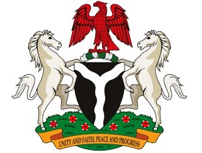
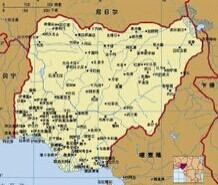

- 尼日利亚国旗
- 尼日利亚国徽
- 尼日利亚标志性建筑
- 尼日利亚地理位置
尼日利亚概况
尼日利亚是西非国家
人口概况
1.68亿（2011年）。非洲人口最多的国家。有250多个民族，其中最大的是北部的豪萨－富拉尼族（占全国人口29%）、西部的约鲁巴族（占21%）和东部的伊博族（占18%）。官方语言为英语。主要民族语言有豪萨语、约鲁巴语和伊博语。居民中50%信奉伊斯兰教，40%信奉基督教，10%信仰其他宗教。
尼日利亚经济
尼日利亚是非洲最大的石油生产国和世界第六大石油出口国, 也是石油输出国组织OPEC(欧佩克)成员国之一。尼原为农业国。七十年代起成为非洲最大的产油国, 农业日渐萎缩。资源丰富。尼日利亚石油天然气资源十分丰富。自1970年代以来, 石油出口逐渐成为该国最主要的经济来源。石油出口收入占出口总收入的98%, 占国家总收入的83%。在2006年, 尼日利亚的国内生产总值列表(国际汇率)达114.69, 居非洲第三, 仅次于阿尔及利亚(114.73)。
外交关系
现任政府奉行广泛结好、积极参与国际事务、促进和平与合作的外交政策。主张各国相互尊重主权和领土完整，通过谈判解决争端，加强国际合作，促进世界和平，建立公正的国际政治经济秩序。积极推动西非地区经济一体化进程并参与联合国和非洲地区组织的维和行动，谋求发挥非洲大国作用。将经济外交作为优先发展方向，重视同西方国家及新兴大国保持友好合作关系。尼与100多个国家建立了外交关系，共设100多个驻外机构。尼是联合国、不结盟运动、77国集团、15国集团、非盟、西非国家经济共同体和石油输出国组织等成员国，现为非洲气候变化国家元首和政府首脑委员会成员国。2011年10月，尼成功当选联合国经社理事会成员国，任期为2012-2014年。
经贸往来
中尼签有贸易、经济、技术、科技合作和投资保护等协定，并设有经贸联委会。尼是中国在非洲的第四大贸易伙伴、第二大出口市场，也是中国主要投资目的地国。2011年中尼贸易额107.88亿美元，其中中方出口92.07亿美元。2012年1－10月双边贸易额86.81亿美元，其中中方出口75.19亿美元。中方出口商品主要为机电产品和建筑型材等，进口原油和液化天然气等。截至2011年底，中国企业在尼累计签订承包工程合同额316亿美元，居非洲第二位。中方已承揽铁路改扩建、阿布贾体育中心运动员村、发电站、农村程控电话网、石油区块开发等项目。